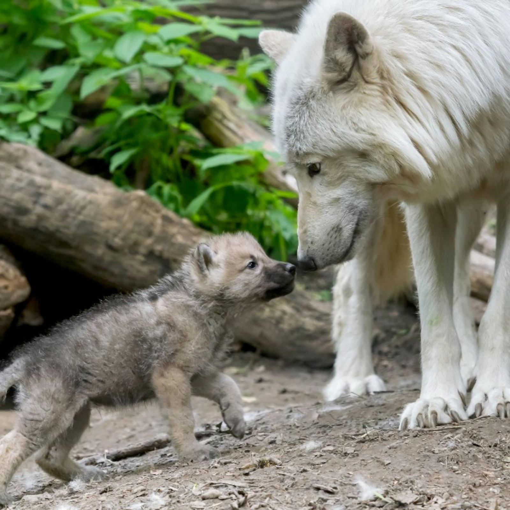

As the world's leading conservation organization, we work in nearly 100 countries to tackle the most critical issues at the intersection of nature, animals, and climate. Recognizing that the problems facing our planet are increasingly more complex and urgent, WWF focuses its work on six ambitious goals. Through this integrative approach, we can challenge the planet's greatest threats and ensure a healthy future for animal and nature. Your donation to our animal charity helps save lives every day. Whether it's rescuing stray animals, providing medical care, or finding loving forever homes, your support makes a tangible difference. For every dollar you contribute, we can provide a meal for a hungry animal, a warm bed for a homeless pet, or critical medical treatment for those in dire need. Imagine the joy of seeing a once-neglected dog wagging its tail in a new home or a kitten purring contentedly in a safe shelter. Your generosity transforms lives and brings hope to those who cannot speak for themselves.